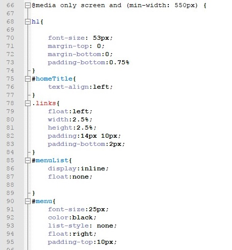
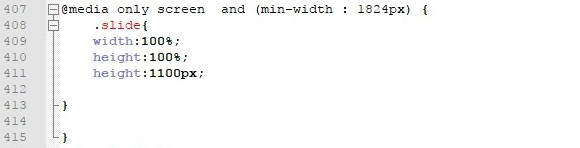
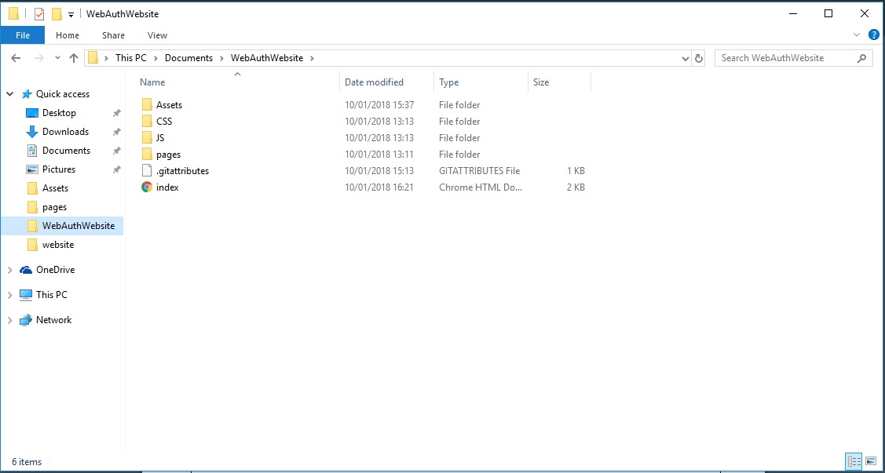
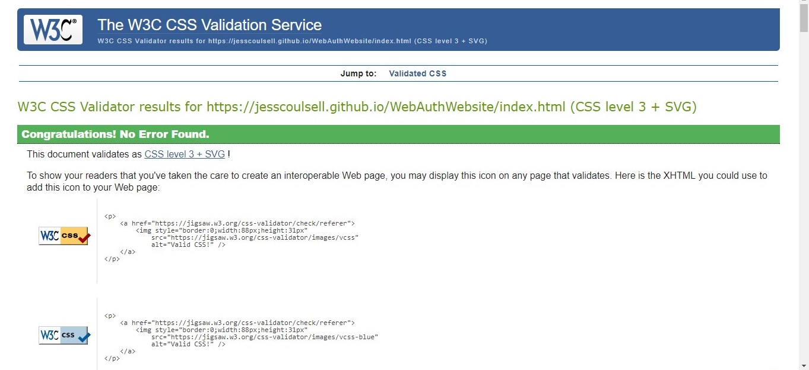
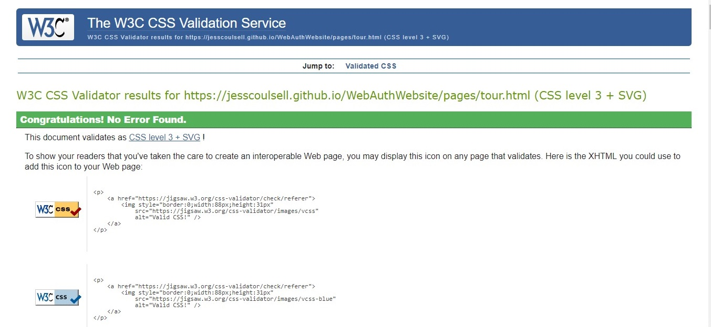

CMP1130M Web Authoring Assessment Critical Log
Demo VideoIntroduction
The assessment for the CMP1130M Web Authoring module was to design a responsive and interactive website for a band or brand. For my website, I decided to create a site for the singer Harry Styles. It was also required that I examine the advantages and disadvantages of current web specifications and standards. The website needed to be developed with consideration of the current web standards to achieve a functional and accessible website with the correct features. The website itself contains features such as: multimedia elements, hyperlinks, local storage and JavaScript elements throughout.
Web Standards
The current web standards were created by W3C. Their mission is to “lead the World Wide Web to its full potential by developing protocols and guidelines that ensure the long-term growth of the Web” (W3C,2017). Because of this there are now standards to make websites more accessible and universal to all. An advantage to using current web standards that it makes websites easier to maintain and can therefore reduce the running costs for a website. One example of a Web standard that provides greater accessibility and therefore makes the website available to the largest audience is using alternative text for images. “Whereas textual content is inherently accessible, the same cannot necessarily be said for multimedia content — image/video content cannot be seen by visually-impaired people” (Mozilla,2018) Because of this I have included alternative text information for all the images on my site as seen in the screenshot below.

This means that if a screen reader is used with the website, a description of the image will be read which makes the site more accessible for those who may be visually impaired, this is one of the advantages of the W3C web standards as they force developers to make their websites more inclusive which means the World Wide Web is easily available for more people. My website has been designed to fit the Document Object Model (DOM). This allows for easier access and modification of the websites HTML and CSS content when using scripting languages such as JavaScript. The Website also uses HTML5 and CSS3 which are the most current web standards. This means that the website will be capable of functioning as expected now and in to the future. As specified by the current web standards my CSS and JavaScript are in external linked files in order to make the HTML more clear and understandable and aid future maintenance and make it easier for others to understand. I also commented my code for the same purpose. “Web interoperability is defined as the ability of different types of platforms, devices, networks, and applications to work together effectively, without prior communication, to find, retrieve, exchange, and re-use Web content in a useful and meaningful manner.” (Government of Canada, 2012). I frequently tested my website during development in order to ensure its interoperability in the current most popular web browsers such as: Google Chrome, Microsoft Edge and Firefox. This can be seen being demonstrated in the supporting video. Although Web Standards improve website accessibility in many ways, they also have some down sides. One way that web standards can affect website development negatively is that it needs stricter more precise coding. This can mean that it is more difficult and time consuming or developers and those wishing to learn web development as they have to make sure they meet these standards. Similarly, developers need to have greater, more in depth knowledge of standards and web interoperability in order to ensure that the sites they develop meet the required standards. Although following the web standards laid out by W3C is not mandatory it is preferred for websites to be developed to follow them. Because of this it could be considered that web standards stifle creativity and limit the creative license developers have over the web sites they design/develop. It may also prevent new and innovative ideas for both web development and standards from being created and tried out if they don’t meet the current web standards decided upon.
Responsive
In order to make my website responsive I worked from mobile up with my CSS styling and used media queries in order to alter the styling of my website based on the size of the screen it is being displayed on. I used two different media queries in my CSS, one for laptop/ small desktop screens and one for larger desktop screens. This created a fluid and flexible when view across various screen sizes.
 Because of these media queries my website displays well on any screen size. Below are some images of my website view on a mobile screen to show how these media queries work.
File Organisation Structure
Files are organised in the Document Object Module (DOM) as shown in the screenshot below.
W3C Validation of the Website Pages HTML
Index Page

Music Page
Video Page
Shop Page
W3C Validation of the Website Pages CSS
Index Page
Music Page
Tour Page
Video Page
Shop Page
All of my web pages meet the W3C standards for both HTML and CSS
Refrences
www.W3.org, 2017. W3C Mission. [Online]. Available at:
Source[Accessed 9th January 2018].
developer.mozilla.org, 2018. Text Alternatives. [Online]. Available at:
Source[Accessed 9th January 2018].
Government of Canada, 2012. Standard on Web Interoperability. [Online]. Available at:
Source[Accessed 9th January 2018].